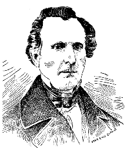
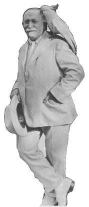

Treatments for Self-Abuse and its Effects:
"A remedy which is almost always successful in small boys is
circumcision...The operation should be performed by a surgeon without
administering an anesthetic, as the brief pain attending the operation
will have a salutary effect upon the mind...In females, the author has
found the application of pure carbolic acid to the clitoris an excellent
means of allaying the abnormal excitement. " -- Dr. John Harvey
Kellogg
A free thinker, Sylvester Graham (1794-1851) lashed out against white bread, feather beds, pork, tobacco, salt, condiments, tight corsets, nocturnal emissions, heavy clothing and hot mince pie. His specialties, though, were masturbation and poor eating habits. Graham was by no means the first to decry the debilitating effects of masturbation; Judeo-Christian tradition has long considered it an evil, a barrier to the natural function of sexuality -- reproduction. But Graham's approach was different, focussing on health rather than morality.
Sylvester Graham: grain lover
Before 1700, medical references to the harmful effects of masturbation
were scarce. In the eighteenth century, two works, Ononia: Or the
Heinous Sin of Self-Pollution, and all its Frightful Consequences...
(by an anonymous author) and Samual Tissot's Treatise on the
Diseases Produced by Onanism introduced concepts that Graham adopted
and help popularize (for example, Tissot's idea that loss of semen under
any condition caused health hazards). Graham's Lecture to Young
Men (1834) was the first of its kind and launched a whole genre of
medical tracts on masturbation, known then as "self abuse" or "self
pollution."
Graham knew his audience. A solid grasp of rhetorical devices had him making claims no one could disprove. Or rather, would disprove. Though people often disagreed on the particular causes of masturbation, most believed the symptoms were easy to recognize -- victims were usually shy, suspicious, languid, unconcerned with hygiene, jaundiced. Graham used this to his advantage; in fact, he found most any health problem could be tied to masturbation. Only first-hand experience (yuk yuk) could disprove his claims and Graham came prepared to beat down any challengers with flamboyant, over-the-top gore. According to Graham, a masturbator grows up "with a body full of disease, and with a mind in ruins, the loathsome habit still tyrannizing over him, with the inexorable imperiousness of a fiend of darkness."
The cause of acne in incriminating teens is revealed, and the result: "...ulcerous sores, in some cases, break out upon the head, breast, back and thighs; and these sometimes enlarge into permanent fistulas, of a cancerous character, and continue, perhaps for years, to discharge great quantities of foetid, loathsome pus; and not unfrequently terminate in death."
After 1834, Graham stopped lecturing about sexuality and started focussing his attention on sound nutrition. The frank talk had become too heated, too divisive. Graham considered his move into dietary reform a natural, evolutionary step: the proper diet moderated sexual desire.
From his early days, Graham believed both kinds of hunger -- sexual and nutritional -- threatened good health. As equally influencial on him as sex theorist Tissot was homeopath William Metcalfe. Metcalfe, an English clergyman, was the first public advocate of vegetarianism in American and a strong believer in the future of asparagus seed as a coffee substitute. But while Metcalfe argued vegetarianism on moral grounds, Graham was more concerned with the carnal passions meat-eating provoked. The stomach was considered the major organ of the body, so anything that inflamed it was compared to lust. The medical profession was evil, according to Graham, and, besides, there was no need for it since: "Disease is never the legitimate result of the normal operation of any of our organs." All irritations or excitements such as hunger or sexual desire exhausted the body and increased the chance of disease and death. Fortunately, this made the cure for virtually ever human sickness simple -- sexual moderation (no more than 12 times a year for married couples), exercise (to help prevent nocturnal emissions) and the proper diet (to facilitate free peristaltic action of the bowels, among other benefits).
By 1840, Graham's public career was finished; but not without having influenced a number of bran-lovin' upstarts. One of these was James Caleb Jackson (1814-1895), a diet expert who combined Graham's health reform plan with hydropathy. Hydropathic therapy, also known as the water-cure, involved applying extremely cold water -- showers, tubs, soaks, and wet-packs -- to different parts of the body. Jackson's real brainstorm, however, was creating a stone-like wafer out of graham flour and water. He called his treat Granula, and would later go down in history as having made the first cold breakfast cereal.
John Harvey Kellogg
Though unpleasant to the taste, Granula found a ready-made market at
Jackson's sanitarium in Dansville, NY, where it was digested by
residents. It was here that Sister Ellen White of the Seventh Day
Adventists visited on the advice of an angel. And it was here that she
received a message from above instructing her to duplicate the Dansville
setup and open a two-meal-a-day facility for Adventists. Thus was born
the Western Health Reform Institute in Battle Creek, Michigan.
At the time, Battle Creek was the world headquarters for Seventh Day Adventists, a fundamentalist "society of the faithful." Convinced vegetarians, the Adventists followed Genesis literally where it says "Behold, I have given you every herb bearing seed...to you it shall be meat." Known later as the Kellogg Sanitarium or just The San, the Institute was to play a key roll in revolutionizing the American breakfast, making Battle Creek the international Cereal City.
Sister White was a health reform pro when she opened the Sanitarium. Inspired by Graham and Jackson, she had published a book on masturbation in 1864, called An Appeal to Mothers: The Great Cause of the Physical, Mental and Moral Ruin of Many of the Children of Our Time. But a leader she was not and the Institute she founded with Adventist money floundered for ten years until a quirky young doctor, John Harvey Kellogg, took over daily operations. Kellogg, another Graham disciple, was highly regarded in Adventists circles for his hard-hitting medical journalism. Unlike Graham, he openly embraced medical science and was constantly experimenting with whole-grain foods.
After two years on the job, he came up with the first Battle Creek health treat -- a mixture of oatmeal and corn meal, baked into biscuits, then ground to bits. He called his discovery Granula, a peculiar decision considering the only other cereal then was called Granula. Once they finished suing, Kellogg re-named his product Granola.
Granola was only one of several delicacies the doctor designed for patients at The San. Other house specialties included Caramel Cereal Coffee, Bulgarian yogurt (Kellogg was big on yogurt) and meat substitutes Protose (like beefsteak) and Nuttose (like veal). At one point, Kellogg concentrated solely on nuts. He wrote a paper, "Nuts May Save the Race," supposedly invented peanut butter, several other nut spreads and Malted Nuts.
Though low on flavor, the ambitious menu helped turn the hospital around financially. Under Kellogg's guidance, most of the patients admitted to The San just needed a diet. They were overweight or overworked. They suffered from Americanitis, treatable with rest, room service and wheelchair socials. The cure rate became remarkably high since no one seriously ill was admitted.
No chronic masturbators were admitted either. Kellogg echoed Graham's doom-and-gloom views on the matter and even added to them. On the night of his honeymoon (more on this in a moment), he spent his time writing Plain Facts for Old and Young, a warning on the evils of sex. Of the 644 pages, 97 address "Secret Vice (Solitary Vice or Self-Abuse)," its symptoms and results. Included are 39 signs indicating someone is jacking off; a list comprehensive enough to indict everyone vaguely human: #7. Sleeplessnes, #11. Love of solitude, #12. Bashfulness and #13. Unnatural boldness, #14. Confusion of ideas, #24. Capricious appetite, #28. Use of tobacco, #30. Acne.
Such was Dr. Kellogg's power play: in rejecting known masturbators from the hospital, he avoided acknowledging there was no real cure. Yet his theories gave him an outlet from poor slobs the hospital diet couldn't cure. Dr. Kellogg could diagnose them as masturbators and thus pass responsibility for the problem onto the patient. If the illness persisted, that was proof that the secret vice persisted, that its effects were long-term or irreversible, or that its effect had been inherited from the secret vice of the parents. Dr. Kellogg was never wrong. In fact, he made an issue of abstaining from all sexual relations himself, supposedly to prove that sex was not necessary to health. Though he married Ella Eaton, their marriage was never consummated and they lived in separate apartments.
It's quite likely, though, that the doctor was in some way dysfunctional (one book suggests he had mumps). After breakfast every morning, he had an orderly give him an enema. This may mean he had klismaphilia, an anomaly of sexual functioning traceable to childhood in which an enema substitutes for regular sexual intercourse. For the klismaphile, putting the penis in the vagina is experienced as hard, dangerous, and repulsive work.
Whatever the reason for Dr. Kellogg's various beliefs, they had a lasting effect. The San became more and more famous while Dr. Kellogg became something of a demagogue. Gradually, his medical training and unwavering belief in the power of wholegrain foods started to win out over his fundamentalist faith.
A major step in this direction took place when a patient showed him little wheat mattresses a friend had sent her for digestive trouble. The wheat cakes were being peddled by a man in Denver, Henry Perky, who called his creation "Shredded Wheat." Dr. Kellogg experimented with the wheaty filaments and concluded that they were "like eating a whisk broom." Still, his curiosity was raised.
Shredded Wheat, it should be pointed out, was not yet considered a breakfast food. Originally the biscuits were intended as a main course, a "natural food" in the Grahamite tradition. There was cheese-and-Shredded Wheat toast, creamed peas in "biscuit baskets," fried mushrooms on split biscuits, banana croquettes with Shredded Wheat and more. Perky even founded a domestic science institute, Oread Institute, to train demonstrators to educate housewives in how to use the product.
But in the wheat biscuits the doctor saw potential for a ready-to-eat breakfast food and went about creating his own. After much trial-and-error, he came up with Granose, the first flaked wheat cereal. Shortly thereafter, he set up commercial production in a barn behind the Sanitarium and went to work securing patents to protect himself from copy-cats. The efforts, however, were to no avail (Dr. Kellogg should've figured this out since 43 patents weren't enough to keep him from ripping off Shredded Wheat). The whole town of Battle Creek exploded with flake fever; cereal and "health food" manufacturers appeared over night and Battle Creek became Cereal Central.
Leading the parade was a man who practically cut his teeth at the the Sanitarium, C.W. Post. An overworked inventor, Post came to Battle Creek to cure his upset stomach while his wife, to help pay the bills, sold suspenders door-to-door. Post stayed at the Sanitarium for nine months and absorbed all the diet theories, health remedies and menu options Kellogg had to offer. He did not get well, in fact he claimed the staff had given him up to die. But he didn't leave uninspired. Toward the end of the 19th century, Battle Creek -- always on the cutting edge of spiritualism -- had become home to various psychics. Post, having witnessed a sort of mental healing at the San, sought these people out and developed an appetite for Christian Science, popular occult books and parapsychology...not unlike a new age zealot of today. After a few trials, Post found himself a Battle Creek mental healer with a miraculous two-day cure for his appendix. And with that, he was, as he was known to say, on "the road to Wellville."
Though outside the sanitarium, Post still sensed unexplored commercial possibilities in the Sanitarium health foods. He proposed to Dr. Kellogg that they work together to promote Minute Brew, a health coffee similar to the one served at the hospital. The Doctor flatly refused. Post then went to the east limits of Battle Creek and, in May 1992, set up his own medical boardinghouse, La Vita Inn. The plan was to provide patients not only with a special diet, but spiritual healing.
Post was not a doctor, he "simply treated patients by mental therapeutics." Nevertheless, his cures -- which basically boiled down to convincing oneself, "I am well!" -- became the talk of the town. Back pains, toothaches, rheumatic joints -- all could be undone in less than five minutes with quick mental negation (sort of a precursor to The Power of Positive Thinking). Meanwhile, Post did some channeling on the side; he once approached Dr. Kellogg and offered to pray for his patients for $50 a week. (The doctor declined, providing another motive for Post to promote La Vita as a refuge for former Sanitarium patients.)
In 1895, Post rolled out the first commercial batch of Postum, his cereal-based coffee substitute, and within a few years, became a multi-millionaire. Having figured out early on that religious imagery upped product value, he nicknamed Postum "Monk's Brew" and dubbed his first cereal Elijah's Manna (later renamed Post Toasties since it was against the law in Britain to register Biblical names).
Post wrote all the advertisements, product descriptions and company literature himself. In so doing, he created a totally new kind of copy -- the first to advertise food as a medicine for regular (sorry) consumers. The original campaign for Postum claimed "It Makes Red Blood." After that, Post went hogwild and invented a disease, "coffee neuralgia," to help sell Postum. "Lost Eyesight through Coffee Drinking," read the ad, followed by a tear-jerking case reported from Somewhere, Illinois. The moral: quit coffee, drink Postum.
Post's next brainstorm was a batch of wheaty, rock-like morsels called Grape Nuts. This time he advertised the cereal food as an alternative to surgery for an inflamed appendix. Grape Nuts, a "brain food" could also cure consumption, malaria and loose teeth.
Every box of Grape Nuts came with a copy of Post's classic text, The Road To Wellville. Basically, it urged conscious consumers to "Eat Grape Nuts, drink Postum, and think positive thoughts." What's interesting is how this evolved out of La Vita's original recipe -- simply to think positive thoughts. Of course, positive thoughts alone don't turn much profit, so converting Wellness into a tangible made a lot of sense. Plus it allowed Post to quietly shut down La Vita (which was becoming a hassle) and dedicate himself fulltime to the organic revolution.
It didn't take long for other entrepreneurs to catch onto Post's advertising techniques and once they did a full-scale health food craze was underway. Ralston Health Food, for example, claimed its tiny grains were "Full of vegetable Phosphorous that makes children grow like magic and develop strong mentally," giving the brain "all the phosphorus it can use in heavy thinking." The American Cereal Company (predecessor of Quaker Oats) said its Apetiza made red blood, which as Carson points out, distinguishes it from all other foods, except Grape Nuts, which also made red blood. And said so first.
Where was Dr. Kellogg during all this? Oddly enough, the doctor started losing money just as cereal was evolving into a breakfast food staple. The Sanitarium had a few problems -- it burned down, lost its money, and the Adventists excommunicated Dr. Kellogg (and eventually severed ties with the Sanitarium). Plus the company Dr. Kellogg had started, Sanitas Food Company, was losing money; the doctor was much more interested in playing with food than selling it. His brother, however, was an entirely different animal.
William K. Kellogg had worked for his brother since the Sanitarium opened. An organizer with sharp business sense, W.K. wasn't interested in crusading against masturbation or bad eating habits -- he wanted to get paid. In the Doctor's inventions, he saw a potential fortune. The problem was getting his brother to agree to anything; as he got older, Dr. Kellogg only seemed to grow more and more manic, refusing to compromise his ideals and commercialize his creations.
The break-through came when W.K. convinced his brother that they should form a new company to manufacture corn flakes. The Battle Creek Toasted Corn Flake Company was incorporated in 1906 and placed under W.K.'s management. Dr. Kellogg was the majority stockholder, but he distributed part of this stock among the Sanitarium doctors. Later, while Dr. Kellogg was away in Europe visiting Pavlov, W.K. went around and bought up the stock until he personally owned a majority. The new president, W.K., promptly put his signature on the box and renamed the company that was ultimately to become Kellogg Co.
Here our story pretty much ends. When W.K.'s signature went on the corn flakes, the picture of the San came off and from that day forth, corn flakes were known for their great taste rather than their health benefits. Sugar and other additives became part of the recipe and advertising spared none -- pretty girls, baby contests, door-to-door canvassing were all employed to make Kellogg a household name. This didn't happen without fight. The Doctor and W.K. went through years of legal battles over the name, but W.K. won out. Both men lived to be 91. Though that was certainly long enough to see the Doctor's ideas about sex and diet disproved by his beloved medical establishment (germ theory, immunological theory, molecular-genetic theory, hormonic and metabolic theory) he never retracted his claims. He was never wrong. To this day, some of his ideas about masturbation and sexuality are still polluting the populous.
Go to "There's One In Every Family" (related graphic)
John Harvey Kellogg, M.D., by Richard W. Schwarz, Andrews
University Press, Berrien Springs, MI, 1981. (this book pretty much
sucks; mainly a puff piece by a fan; I didn't get much out of it)
Eros and Modernization: Sylvester Graham, Health Reform, and the
Origins of Victorian Sexuality in America, by Jayme A. Sokolow,
Associated University Presses, NJ, 1983. (academic, very readable)
Cornflake Crusade, by Gerald Carson, Rinehart & Co., New York,
1957. (a cereal food classic)
{kind=link}